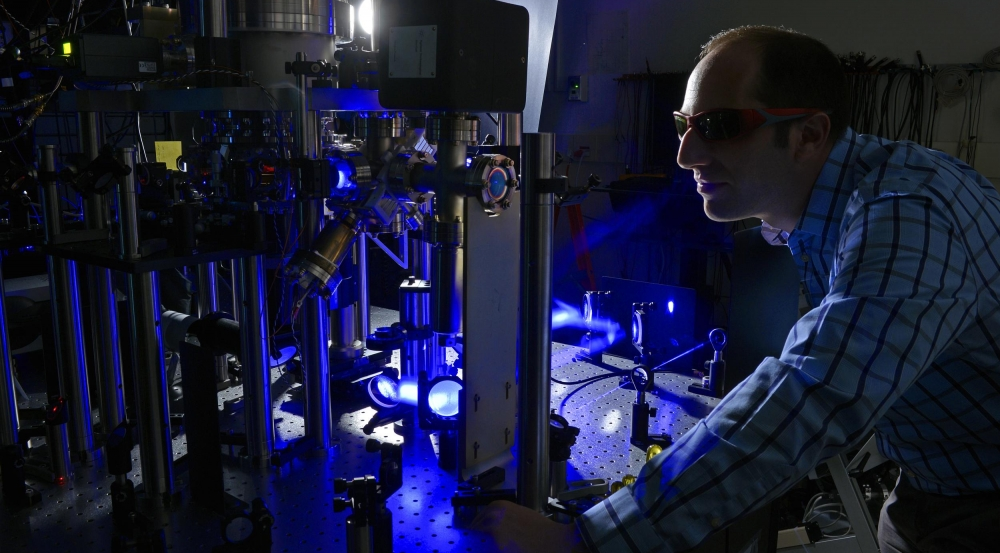

Career Paths
Quantum computing offers diverse career paths, including roles as quantum algorithm developers, quantum hardware engineers, and quantum software researchers. These professionals work on cutting-edge technologies that have the potential to revolutionize industries.
Required Skills
To succeed in quantum computing, you'll need a strong foundation in quantum mechanics, linear algebra, and programming languages like Python and Qiskit. Problem-solving skills and the ability to work in interdisciplinary teams are also essential.
Industries & Employers
Quantum technologies are being developed by tech giants, research labs, and innovative startups. Companies like IBM, Google, and Rigetti are leading the charge, offering exciting opportunities for those entering the field.
